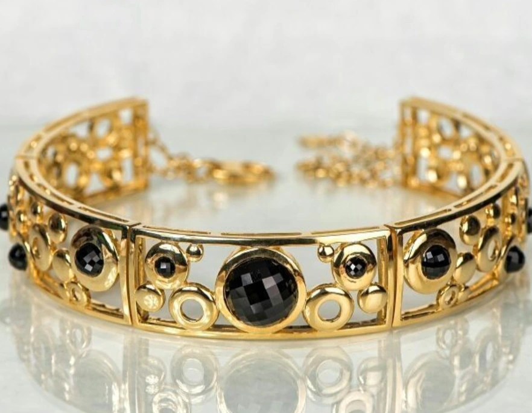
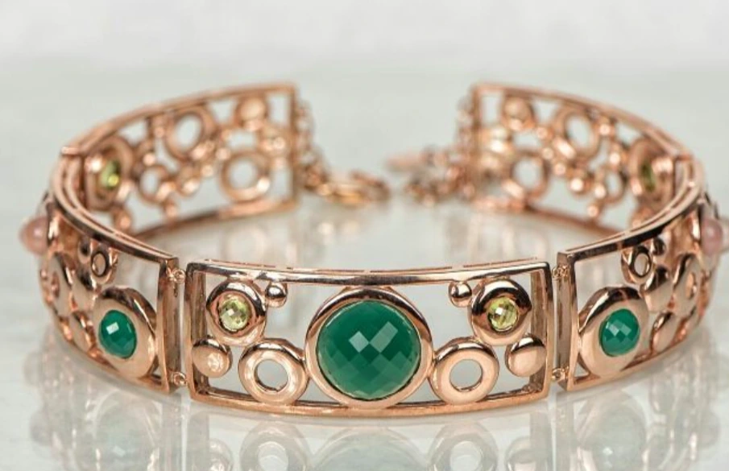
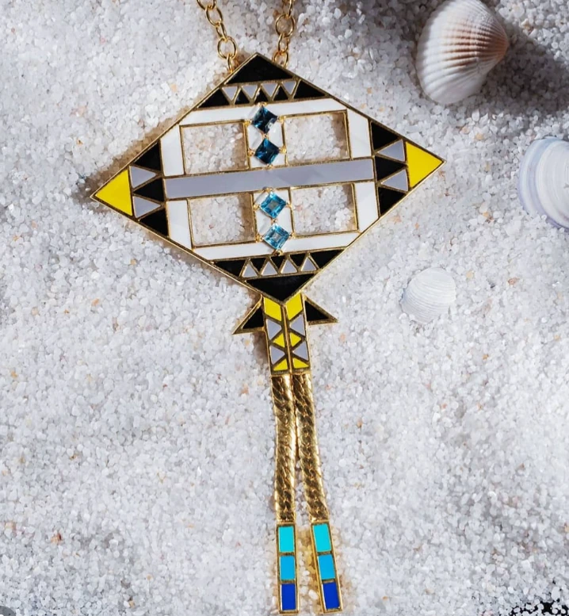

Know our artist · Victoria Diamonds
Rachel
Gemma Tan
Lead artisan & jewellery designer
A meeting of art, fashion and personal expression.
Rachel brings her background in arts, design and fashion to jewellery made for the modern woman: confident in her identity and individual in her style.
The person behind the pieces
A perspective shaped
by design and discovery.
Rachel draws her expertise from business, arts, design and fashion. She has prior training in jewellery design from Nanyang Academy of Fine Arts and fashion design from Central Saint Martins.
With over 14 years immersed in design, she brings the influence of different cultures and her extensive travels into her work. Her approach celebrates jewellery as an expression of the person wearing it.
Selected work
Jewellery as an art form.
Three pieces from Rachel’s work.
Explore the details, from open circles to bold geometry.


Circular study I
Dark faceted stones sit within an open arrangement of circles and polished, gold-toned lines.


Circular study II
A variation in rose tones, pairing green colour with the same rhythm of circular forms.


Geometry
in colour
A graphic composition of angles, open space and vivid colour, finished with a long chain detail.
From Rachel’s portfolio: an exploration of contrast, colour and sculptural form.
Enquire about Rachel’s work ↗Your own expression
Let’s begin with an idea.
Explore our jewellery collections or speak to the London atelier about a piece that feels personal to you.